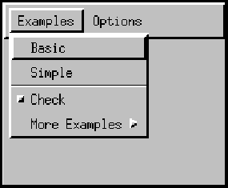

All Packages Class Hierarchy This Package Previous Next Index
Class java.awt.CheckboxMenuItem
java.lang.Object
|
+----java.awt.MenuComponent
|
+----java.awt.MenuItem
|
+----java.awt.CheckboxMenuItem
- public class CheckboxMenuItem
- extends MenuItem
- implements ItemSelectable
This class represents a check box that can be included in a menu.
Clicking on the check box in the menu changes its state from
"on" to "off" or from "off" to "on."
The following picture depicts a menu which contains an instance
of CheckBoxMenuItem:

The item labeled Check shows a check box menu item
in its "off" state.
When a check box menu item is selected, AWT sends an item event to
the item. Since the event is an instance of ItemEvent,
the processEvent method examines the event and passes
it along to processItemEvent. The latter method redirects
the event to any ItemListener objects that have
registered an interest in item events generated by this menu item.
- See Also:
- ItemEvent, ItemListener

-
 CheckboxMenuItem()
CheckboxMenuItem()
- Create a check box menu item with an empty label.
-
CheckboxMenuItem(String)
- Create a check box menu item with the specified label.
-
CheckboxMenuItem(String, boolean)
- Create a check box menu item with the specified label and state.

-
 addItemListener(ItemListener)
addItemListener(ItemListener)
- Adds the specified item listener to receive item events from
this check box menu item.
-
addNotify()
- Creates the peer of the checkbox item.
-
getSelectedObjects()
- Returns the an array (length 1) containing the checkbox menu item
label or null if the checkbox is not selected.
-
getState()
- Determines whether the state of this check box menu item
is "on" or "off."
-
paramString()
- Returns the parameter string representing the state of this check
box menu item.
-
processEvent(AWTEvent)
- Processes events on this check box menu item.
-
processItemEvent(ItemEvent)
-
Processes item events occurring on this check box menu item by
dispatching them to any registered
ItemListener objects.
-
removeItemListener(ItemListener)
- Removes the specified item listener so that it no longer receives
item events from this check box menu item.
-
setState(boolean)
- Sets this check box menu item to the specifed state.

 CheckboxMenuItem
CheckboxMenuItem
public CheckboxMenuItem()
- Create a check box menu item with an empty label.
The item's state is initially set to "off."
CheckboxMenuItem
public CheckboxMenuItem(String label)
- Create a check box menu item with the specified label.
The item's state is initially set to "off."
- Parameters:
- label - a string label for the check box menu item,
or
null for an unlabeled menu item.
CheckboxMenuItem
public CheckboxMenuItem(String label,
boolean state)
- Create a check box menu item with the specified label and state.
- Parameters:
- label - the button label.
- state - the initial state of the menu item, where
true indicates "on" and
false indicates "off."

 addNotify
addNotify
public void addNotify()
- Creates the peer of the checkbox item. This peer allows us to
change the look of the checkbox item without changing its
functionality.
Most applications do not call this method directly.
- Overrides:
- addNotify in class MenuItem
- See Also:
- createCheckboxMenuItem, getToolkit
getState
public boolean getState()
- Determines whether the state of this check box menu item
is "on" or "off."
- Returns:
- the state of this check box menu item, where
true indicates "on" and
false indicates "off."
- See Also:
- setState
setState
public synchronized void setState(boolean b)
- Sets this check box menu item to the specifed state.
The boolean value
true indicates "on" while
false indicates "off."
- Parameters:
- b - the boolean state of this
check box menu item.
- See Also:
- getState
getSelectedObjects
public synchronized Object[] getSelectedObjects()
- Returns the an array (length 1) containing the checkbox menu item
label or null if the checkbox is not selected.
- See Also:
- ItemSelectable
addItemListener
public synchronized void addItemListener(ItemListener l)
- Adds the specified item listener to receive item events from
this check box menu item.
- Parameters:
- l - the item listener.
- See Also:
- ItemEvent, ItemListener, removeItemListener
removeItemListener
public synchronized void removeItemListener(ItemListener l)
- Removes the specified item listener so that it no longer receives
item events from this check box menu item.
- Parameters:
- l - the item listener.
- See Also:
- ItemEvent, ItemListener, addItemListener
processEvent
protected void processEvent(AWTEvent e)
- Processes events on this check box menu item.
If the event is an instance of
ItemEvent,
this method invokes the processItemEvent method.
If the event is not an item event,
it invokes processEvent on the superclass.
Check box menu items currently support only item events.
- Parameters:
- e - the event
- Overrides:
- processEvent in class MenuItem
- See Also:
- ItemEvent, processItemEvent
processItemEvent
protected void processItemEvent(ItemEvent e)
- Processes item events occurring on this check box menu item by
dispatching them to any registered
ItemListener objects.
This method is not called unless item events are
enabled for this menu item. Item events are enabled
when one of the following occurs:
- An
ItemListener object is registered
via addItemListener.
- Item events are enabled via
enableEvents.
- Parameters:
- e - the item event.
- See Also:
- ItemEvent, ItemListener, addItemListener, enableEvents
paramString
public String paramString()
- Returns the parameter string representing the state of this check
box menu item. This string is useful for debugging.
- Returns:
- the parameter string of this check box menu item.
- Overrides:
- paramString in class MenuItem
All Packages Class Hierarchy This Package Previous Next Index